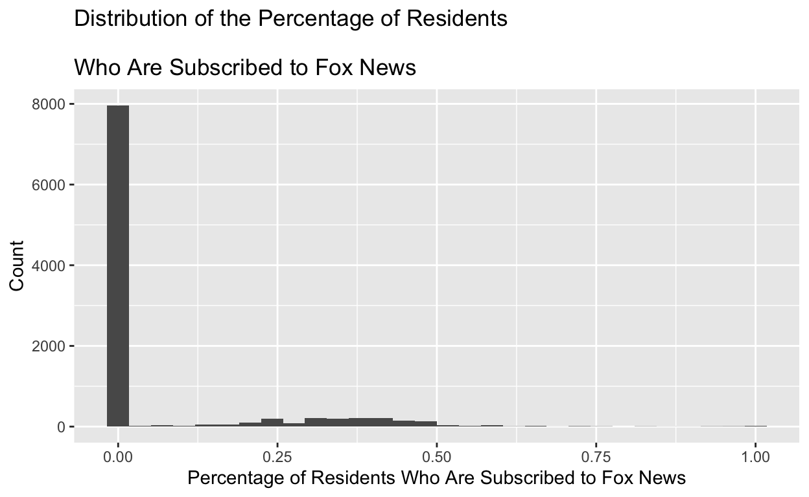
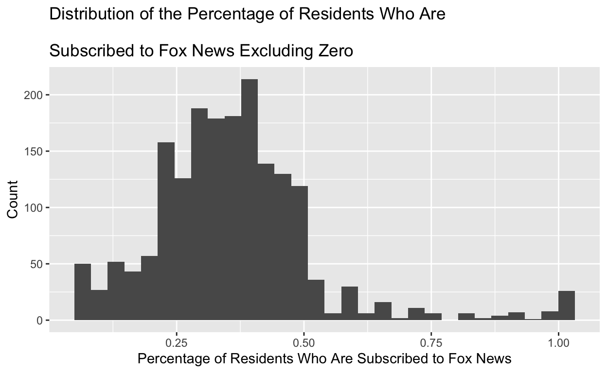

The Impact of the Introduction of Fox News on the Outcome of the 2000 Presidential Election
I will be using the Fox News rollout data set for my project in order to investigate the question: How do the broadcast news sources of a community impact their political opinions? More specifically, how did the introduction of Fox News impact the share of Republican votes in the 2000 Presidential election? As Fox News is a broadcast news organization that was launched in 1996 to compete with CNN, this data set includes Presidential election data in select cities from 1992, 1996, and 2000 both shortly before and after this introduction of an alternative media source in order to understand how the conservative slant of the network influenced politics. My hypothesis is that one’s broadcast news source highly influences their political opinions, and as a result, the introduction of Fox News will increase the share of votes for the Republican party, with more subscribers to Fox News in a community resulting in more GOP support. This hypothesis comes from my personal experiences interning on Capitol Hill, where constituents who would call into our office would regularly cite commentators on partisan broadcast news networks such as Fox as the fuel for their political opinions, even citing partisan opinion commentary shows as empirical evidence. Especially in the United States’ current extremely partisan broadcast media landscape, I think that Americans’ views on political issues are highly dependent on their news sources.
Studying the influence of media consumption on political opinion is important as democracies are strongest when citizens are able to utilize their own independent judgment in crafting their political opinions and casting their votes, rather than allowing powerful media corporations backed by wealthy donors influence their participation in the system. Analyzing the impact that the introduction of a new conservative media source has on the election results of a community will be critical to understanding what powers exert control over America’s democratic processes.
The data set that I am using combines information collected from multiple sources: subrf2000, or the variable that indicates the share of a certain city that was subscribed to Fox News in 2000, was collected from the 2001 Television and Cable Factbook which contains information on all local cable companies as of November 2000 (right up to the 2000 Presidential elections); gopvoteshare2000, or the share of votes won by Republicans in a city in the 2000 Presidential election was collected by the Federal Election Project (Lublin and Voss, 2001); the election data for 1996 and 1992 indicated by variables gopvoteshare1996 and gopvoteshare1992 were collected from the Election Division of the Secretary of State of each state; and demographic information on each city studied was collected from the 1990 United States Census. All of these values are represented as fractions of a whole in the data set, with a value of “1” being indicative of 100%.
In order to investigate my hypothesis, I am interested in doing a cross-sectional research study that investigates the correlation between the subrf2000 variable, which indicates the share of a certain city that was subscribed to Fox News in 2000, with the gopvoteshare2000 variable, which indicates the share of votes won by Republicans in the 2000 presidential election. I think it would also be interesting to find the correlation between different demographic data and whether or not people are subscribed to Fox News or tend to vote Republican. This can be done with the provided data set by finding the correlation between subrf2000 or gopvoteshare2000 with black1990, indicating the percentage of black people in a certain city, hisp2000, indicating the percentage of hispanic people in a certain city, or even income1990, indicating the median income in a certain city. That way, we can determine if the share of Fox News subscribers has a higher correlation with Republican voting outcomes compared to other possible explanations of race and income, although this analysis will not prove causality as it will simply demonstrate a correlation and the effect could be due to other confounding factors not studied.
This hypothesis would be proven through this analysis by a high correlation between cities’ proportion of Fox News subscribers and GOP vote share, and strengthened if that correlation is even higher than the correlation between GOP vote share and other demographic variables such as the share of Black/Hispanic population or the median income. If the correlation between the proportion of Fox News subscribers and the share of GOP votes is extremely low, or if racial demographics and/or income levels of various communities have a higher correlation with GOP votes compared to Fox News subscribers, this would disprove my hypothesis.
I also decided to expand the scope of this project further and do a differences-in-differences analysis, comparing the GOP vote share in cities that had access to Fox News and those that did not in the 1996 Presidential election, before Fox News took hold, to the 2000 Presidential election. In order for this analysis to be validated, the parallel trends assumption must hold, meaning that the difference between the ‘treatment’ and ‘control’ group would have been constant over time in the absence of treatment. This is usually done through comparing key variables before and after a policy change, but because we only have access to limited demographic data from 1990 in this data set, this assumption cannot be validated. Regardless, if the Differences-in-Differences estimate proves to be substantial, this would serve as reasonable basis for an indication that my hypothesis is correct and that further investigation is warranted.
subrf2000_histogram <- ggplot(data = fox_news,
mapping = aes(x = subrf2000)) +
geom_histogram() + labs(
x = "Percentage of Residents Who Are Subscribed to Fox News",
y = "Count",
title = "Distribution of the Percentage of Residents \nWho Are Subscribed to Fox News"
)
subrf2000_histogram
The main variable of interest in this study, or the percentage of residents within a city who are subscribed to Fox News can be summarized in the histogram above, which shows that the vast majority of the cities studied did not yet have Fox News introduced. As a result, it is difficult to get an understanding of the distribution of Fox News subscribership in cities where the network was made available, so I filtered the data to exclude when subrf2000 was equal to 0 to only display the cities that had access to the network and get a better idea of the media landscape.
filtered_data <- fox_news |>
filter(subrf2000 != 0)
subrf2000_histogram_filtered <- ggplot(filtered_data, aes(x = subrf2000)) +
geom_histogram() + labs(
x = "Percentage of Residents Who Are Subscribed to Fox News",
y = "Count",
title = "Distribution of the Percentage of Residents Who Are \nSubscribed to Fox News Excluding Zero"
)
subrf2000_histogram_filtered
filtered_data_distribution <- filtered_data |>
summarize(
Mean = mean(subrf2000, na.rm = TRUE),
SD = sd(subrf2000, na.rm = TRUE)
)
knitr::kable(filtered_data_distribution)| Mean | SD |
|---|---|
| 0.3598228 | 0.1611857 |
This new histogram is much easier to read and shows details that were not visible under the first histogram where the large number of cities without access to Fox News warped the scale. This histogram shows that of the cities in the United States that had access to Fox News, most of them had roughly a third of their communities subscribed to the network. We can further quantify this by calculating the mean and standard deviation of this filtered data set, which demonstrates that, as visualized, the average percentage of subscribers to Fox News in a city where the network was available in 2000 was 35.98228% with a standard deviation of 16.11857 percentage points, indicating a data set without a lot of spread when you exclude the cities without Fox News access.
fox_news <- fox_news |>
mutate(subrf2000_percent = subrf2000 * 100,
gopvoteshare2000_percent = gopvoteshare2000 *100)
subscribers_GOP <- ggplot(data = fox_news,
mapping = aes(x = subrf2000_percent,
y = gopvoteshare2000_percent)) +
geom_point() + geom_smooth(method = "lm", se = FALSE) + labs(
x = "Percentage of Residents Who Are Subscribed to Fox News",
y = "Two-Party Vote Share for Republicans \nin the 2000 Presidential Election",
title = "% of Fox News Subscribers vs % of GOP Vote Share in Studied Cities"
)
subscribers_GOPThis data visualization is interesting precisely because it is not indicative of the trend that I expected. I anticipated a clear relationship between the percentage of Fox News subscribers and GOP vote share in a community in the year 2000, whereas this scatter plot shows that there is not really a relationship between the two, although the regression line plotted shows a very slight inverse relationship between the two variables. The many vertical lines of data points displayed in this graph indicate how even within cities that have similar or identical percentages of Fox News viewership, their support for the Republican Party in the 2000 election varied widely.
*As a note, I also converted the fractional amounts of “1” in the data set for each of the variables studied into numerical representations of percentages to make the graphical analysis more intuitive.
library(broom)
subscribers_GOP <- lm(gopvoteshare2000_percent ~ subrf2000_percent, data = fox_news)
subscribers_GOP_summary <- tidy(subscribers_GOP, conf.int = TRUE)
knitr::kable(subscribers_GOP_summary)| term | estimate | std.error | statistic | p.value | conf.low | conf.high |
|---|---|---|---|---|---|---|
| (Intercept) | 54.0124672 | 0.1429767 | 377.771062 | 0.0000000 | 53.7322033 | 54.2927311 |
| subrf2000_percent | -0.0188766 | 0.0083900 | -2.249896 | 0.0244776 | -0.0353228 | -0.0024305 |
Running a linear regression between these two variables helps us further understand the line of best fit that was plotted on the graph above. The regression estimates a coefficient of -0.01887663, meaning that for every one percentage point increase in the percentage of subscribers to Fox News in a city, the percentage of votes that went to the Republican Party in 2000 is estimated to have decreased by roughly 0.01887663%. The p-value of 0.02447764 of this regression is less than the conventional alpha level of 0.05, and the 95% confidence interval lies between -0.03532275 and -0.002430499, meaning it does not include zero and the results are statistically significance.
An important consideration in this regression analysis, however, is practical significance. As shown in the graph above, the regression line is basically flat, and a decrease in Republican Party vote share between 0.002430499% and roughly 0.03532275% for every one percent increase in Fox News viewership is too minuscule to practically signify anything about the relationship between two variables. It is curious that this first graphical analysis does not support my hypothesis, however, and further analysis is needed to see if GOP vote share is better correlated with other demographic characteristics of a community.
filtered_data <- filtered_data |>
mutate(subrf2000_percent = subrf2000 * 100,
gopvoteshare2000_percent = gopvoteshare2000 *100)
subscribers_GOP_filtered <- ggplot(data = filtered_data,
mapping = aes(x = subrf2000_percent,
y = gopvoteshare2000_percent)) +
geom_point() + geom_smooth(method = "lm", se = FALSE) + labs(
x = "Percentage of Residents Who Are Subscribed to Fox News",
y = "Two-Party Vote Share for Republicans \n in the 2000 Presidential Election",
title = "% of Fox News Subscribers vs % of GOP Vote Share in Studied Cities"
)
subscribers_GOP_filteredfiltered_data_regression <- lm(gopvoteshare2000_percent ~ subrf2000_percent, data = filtered_data)
filtered_data_summary <- tidy(filtered_data_regression, conf.int = TRUE)
knitr::kable(filtered_data_summary)| term | estimate | std.error | statistic | p.value | conf.low | conf.high |
|---|---|---|---|---|---|---|
| (Intercept) | 56.3932939 | 0.7417283 | 76.029585 | 0.00e+00 | 54.9385700 | 57.8480178 |
| subrf2000_percent | -0.0739899 | 0.0188133 | -3.932853 | 8.71e-05 | -0.1108877 | -0.0370921 |
Before attempting to study the relationship between other demographic variables and electoral outcomes for the Republican Party, however, I was curious as to how the results of this regression would differ if we restricted the data set to only cities that have some access to Fox News. Although the plotted points on the graph would look the same with the exception of the exclusion of points with an x-coordinate value of 0, I still generated another plot in order the visualize the new linear regression line, which, as shown above, is much steeper in the filtered data set compared to the data set that includes cities without Fox News.
The strength of the regression is also shown through the table above, which displays a coefficient of -0.0739899, meaning that for every 1% increase in Fox News subscribers in a city, the share of Republican Party votes decreased by 0.0739899%. The p-value is extremely small and the 95% confidence interval ranges from -0.1108877 to -0.0370921, which still excludes zero and thus demonstrates statistical significance. Although the coefficient estimate of this regression is larger in magnitude, indicating a stronger case for the practical significance of an inverse relationship between percentage of Fox News Subscribers and GOP vote share in the 2000 Presidential election, these numbers are still far to small in a practical sense to indicate any sort of relationship between the two variables.
fox_news <- fox_news |>
mutate(black1990_percent = black1990 * 100)
black_GOP <- ggplot(data = fox_news,
mapping = aes(x = black1990_percent,
y = gopvoteshare2000_percent)) +
geom_point() + geom_smooth(method = "lm", se = FALSE) + labs(
x = "Black Population Share in 1990",
y = "Two-Party Vote Share for Republicans \n in the 2000 Presidential Election",
title = "% of Black Population in 1990 vs % of GOP Vote Share in 2000"
)
black_GOPblack_GOP_regression <- lm(gopvoteshare2000_percent ~ black1990_percent, data = fox_news)
black_GOP_summary <- tidy(black_GOP_regression, conf.int = TRUE)
knitr::kable(black_GOP_summary)| term | estimate | std.error | statistic | p.value | conf.low | conf.high |
|---|---|---|---|---|---|---|
| (Intercept) | 55.3826993 | 0.1283939 | 431.34999 | 0 | 55.1310219 | 55.6343768 |
| black1990_percent | -0.4546122 | 0.0128667 | -35.33235 | 0 | -0.4798335 | -0.4293908 |
This new line of analysis shows a clear negative correlation between the share of black residents in a town in 1990 and the share of votes in the 2000 Presidential election that went to Republicans. This is indicated not only by the steep regression line on the graph, but also an estimated coefficient of -0.4546122, indicating that for every 1% increase in the black population share, the GOP vote share in a community decreased by almost half a percent. The p-value is extremely low and the 95% confidence level ranges from -0.4798335 to -0.4293908, which not only excludes zero but are also values that are close together, indicating that the true effect of an additional 1% increase in black population in a city is almost definetly a decrease between 0.4% and 0.5% in the Republican Party’s vote share.
This line of analysis serves to disprove my hypothesis as it proves that there are other variables (namely, race) outside of the share of subscribers to Fox News that have a much stronger claim to influencing a community’s electoral outcomes. An important caveat to all of the analyses thus far is that they are simply correlational analyses and therefore cannot establish any form of causal significance, regardless of their statistical or practical significance.
Rather than just do the cross-sectional research design above, the inability to establish any conclusive connection between Fox News subscribership and electoral outcomes led me to want to take advantage of the nature of this data set in order to conduct a differences-in-differences research design. Because we know that Fox News was not introduced as a cable news network until October 1996 when it was announced by Ruport Murdoch, we can exploit the timing of the entry of this competing news source by comparing electoral outcomes before and after 1996 between cities that did and did not have access to Fox News. By the November 1996 elections, Fox News had only been launched in a few markets, and, even in those markets, just one month before the elections. By the November 2000 elections, Fox News had an audience that was somewhat comparable to that of CNN, its main competitor at the time. Therefore, the 1996 elections can be interpreted as having been unimpacted by Fox News, and the 2000 elections can be interpreted as having had the treatment effect of Fox News applied for those cities in which it was made available.
group_means <- fox_news |>
group_by(fox_indicator) |>
summarize(
mean_gopvoteshare1996 = mean(gopvoteshare1996_percent, na.rm = TRUE),
mean_gopvoteshare2000 = mean(gopvoteshare2000_percent, na.rm = TRUE)
)
group_means <- group_means |>
mutate(change = mean_gopvoteshare2000 - mean_gopvoteshare1996)
knitr::kable(group_means)| fox_indicator | mean_gopvoteshare1996 | mean_gopvoteshare2000 | change |
|---|---|---|---|
| 0 | 46.79651 | 53.92109 | 7.124573 |
| 1 | 47.90478 | 53.73097 | 5.826190 |
| NA | 50.27083 | 56.04455 | 5.773717 |
The results above demonstrate that the average share of GOP votes in cities that did not have access to Fox News was 46.79651% in 1996 and 53.92109% in 2000, indicating an increase in 7.124573% in the GOP vote share. For cities that did gain access to Fox News, the average share of GOP votes was 47.90478% in 1996 and 53.73097% in 2000, indicating an increase in 5.826190% in the GOP vote share.
DiD_estimate <- group_means |>
summarize(DiD = change[fox_indicator == 1] - change[fox_indicator == 0])
knitr::kable(DiD_estimate)| DiD |
|---|
| -1.298383 |
| NA |
Finding the differences-in-differences mean results in a treatment effect of -1.298383, indicating that cities that gained access to Fox News had, on average, a 1.298383% decrease in their share of GOP votes in the 2000 Presidential election compared to the 1996 Presidential election. For this treatment effect to be true, however, the parallel trends assumption must hold: that is, in the absence of treatment, the difference between the ‘treatment’ and ‘control’ group would have remained constant over time. Unfortunately, there is no way to validate this assumption, as we only have limited demographic data from 1990 and not post-treatment to compare between the treatment and non-treatment groups to ensure the groups are otherwise identical and this discrepancy in GOP vote share can be attributed to the introduction of Fox News. Regardless, the practical implications of a 1.298383% decrease in GOP vote share in cities with access to Fox News is quite small, so there is not much we can conclude from this analysis.
In this project, I conducted a cross-sectional research design analyzing the correlation between the percentage of Fox News subscribers in a city and their GOP vote share in the 2000 Presidential election, which resulted in an extremely small negative correlation between the two variables at a singular point in time, although this correlation was too minuscule to be considered practically significant and also could not establish causality due to the lack of temporal sequencing and the possibility of confounding variables. One such confounding variable that I analyzed was race, which, when analyzed through the lens of the share of black population in a city in 1990, ended up having a much stronger negative correlation with the share of GOP votes in a city compared to the share of Fox news subscribers.
I also conducted a differences-in-differences research design, analyzing the differences in GOP vote share before and after the introduction of Fox News in the treatment group -cities that had some introduction of Fox News- versus the control group -cities that had no introduction of Fox News as indicated by a 0% subscriber rate. This analysis resulted in a small inverse relationship from my hypothesis, demonstrating that cities that were introduced to Fox News had roughly a 1% decrease in GOP vote share, however, as we cannot establish the parallel trends assumption necessary to prove a differences-in-differences treatment effect, this small treatment effect cannot be proven.
As such, my hypothesis that greater exposure to Fox News in a city would result in higher GOP voter share was not proven by either the cross-sectional or differences-in-differences research designs. With more time and money, I would strengthen the differences-in-differences research design by testing if the parallel trends assumption holds. This would be done by studying possible confounding variables -for example race, economic conditions, social media usage, or exposure to other television content- and seeing if their levels changed between 1996 and 2000. Though these characteristics do not have to be the same in both the treatment and control groups, their levels should change in tandem with one another in order to be able to conclusively isolate the introduction of Fox News as the causal effect for the change in the dependent varaible